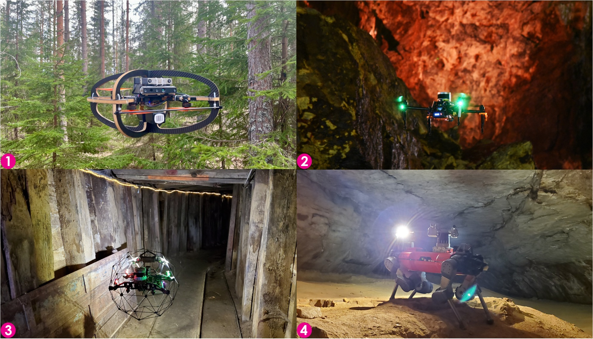

About me
I am Huan Nguyen, Head of the SLAM/NAV Department at VinRobotics, where I lead a 10-person team researching and developing robot localization, mapping, and navigation. My current work includes multimodal SLAM for humanoid robots and vision-language navigation.

My research focuses on autonomous robots that can perceive, plan, and act reliably in challenging real-world environments. My background spans model predictive control, uncertainty-aware informative path planning, multi-aerial-robot systems, aerial manipulation, multimodal sensing, and field robotics. I have deployed robots in challenging field environments, including forests, caves, mines, and ship ballast tanks.
I received my PhD in Engineering Cybernetics from the Norwegian University of Science and Technology (NTNU) in 2023, supervised by Prof. Kostas Alexis. Previously, I was a graduate research assistant at the Autonomous Robots Lab, University of Nevada, Reno, where I completed my MS in 2020. Before joining VinRobotics, I led autonomy development for electric ferries at Hyke.
As a member of Team CERBERUS, I contributed to the winning entry in the 2021 DARPA Subterranean Challenge. I was co-responsible for the autonomy stack of collision-tolerant aerial robots and developed LiDAR–camera calibration software.
You can read more about my research, browse my publications, or download my curriculum vitae.